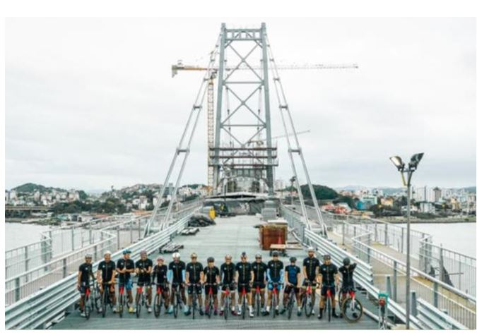
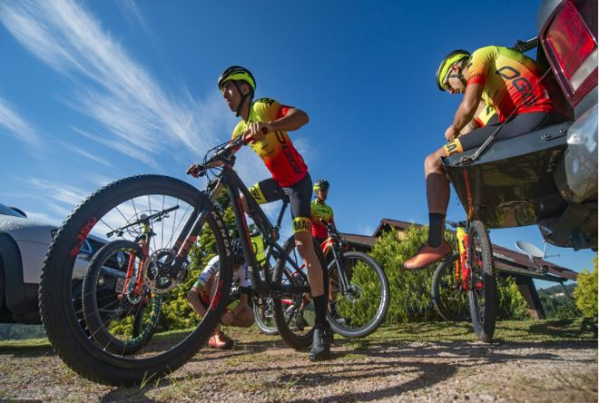
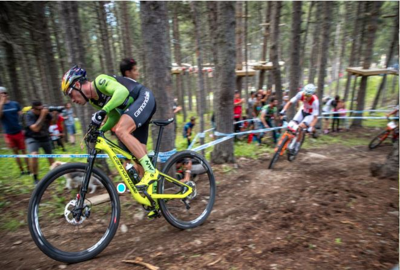

Participações
O Encontro de Negócios - Cyclomagazine & Bike Brasil é o ambiente ideal para apresentar, em primeira mão, os lançamentos e tendências de mercado, além de possibilitar maior aproximação e interação entre o fabricante, fornecedores, distribuidores, importadores, lojistas e profissionais do setor. Não fique atrás de seus concorrentes e participe do Encontro de Negócios - Cyclomagazine & Bike Brasil!
O Tour de France é um dos maiores eventos de ciclismo no mundo. Entenda as regras dessa competição para conhecer mais sobre o esporte. Ciclismo de estrada, como é a prova? O ciclismo de estrada tem diversas competições espalhadas pelo mundo. Conheça mais sobre este tipo de prova e como se dar bem nestas competições.
O Haute Route, um dos maiores eventos de ciclismo do mundo, chega ao Brasil e será realizado em Santa Catarina. O Estado receberá uma das maiores provas de ciclismo de estrada no mundo, entre os dias 11 e 13 de setembro, desafiando atletas em 222 km de percurso, com destaque para o Morro da Igreja, em Urubici, Serra do Rio do Rastro, em Lauro Müller, Morro da Cruz e Ponte Hercílio Luz (ambos em Florianópolis).
3º PASSEIO CICLÍSTICO SHIMANO FEST & SANTUU O evento voltou com tudo em 2022! Foi lindo de ver o mar de bicicletas tomando as ruas de São Paulo, nesse que foi o maior passeio da cidade dos últimos tempos. Tudo organizado pelo Clube Santuu, em parceria com a Shimano Fest e mais 20 marcas apoiadoras. Obrigado a todos que participaram desse dia histórico!
Todos os direitos reservados
© Copyright Bick Log - 2022